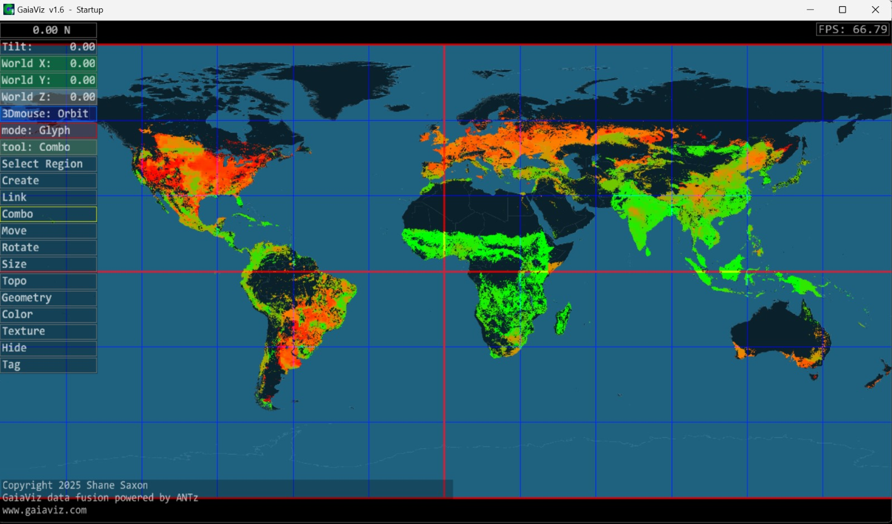

Hello, I'm Meghna!
A passionate data analytics engineer with an eye for meaningful insights and a drive to build web solutions. Dive into my journey below!
Data Analytics Engineer | Exploring Data Analyst & Data Science Opportunities
A passionate data analytics engineer with an eye for meaningful insights and a drive to build web solutions. Dive into my journey below!
I’m Meghna Kattekola, a Data Analytics Engineering graduate from George Mason University, driven by curiosity and a deep interest in solving real-world problems using data. My academic journey began with a Bachelor's in Computer Science & Engineering, followed by internships where I gained early hands-on experience. Staying focused and passionate, I continued straight into my master’s—refining my skills in Python, SQL, machine learning, and visualization tools.
Beyond academics, I value responsibility, honesty, and precision. During my time at GMU, I worked as a Student Worker under Sodexo Dining Services—managing food service and cashier responsibilities while adapting quickly to fast-paced team environments. This role not only paid my bills, but sharpened my attention to detail, multitasking, and communication under pressure.
I believe every great opportunity begins with the right question and an eagerness to learn. I take pride in respecting the privacy of work entrusted to me, and whether it’s data, code, or customer service—I give it my 100%.
M.S. in Data Analytics Engineering
B.Tech in Computer Science and Engineering
Leveraged a web-based interactive tool for visualizing SDG aid and collaboration trends using client-supplied documentation. Integrated geospatial analysis and network graph logic to highlight donor-recipient roles across 195 countries. Delivered clear, presentation-ready insights with a custom data-tag-link system. Final visualizations received positive feedback from client stakeholders.
Initial screenshot of GaiaViz provided by the client – representing the base visualization environment.
Implemented machine learning models (SVM, Decision Tree, Random Forest) using the OASIS dataset to predict Alzheimer's disease. Performed data cleaning, feature encoding, model evaluation and achieved strong classification performance.

Performed aspect-based sentiment analysis on hotel reviews using VADER, with preprocessing techniques like tokenization and stopword removal. Built a multilingual recommendation engine in Python using SpaCy and langdetect to match user queries with hotel features across English, French, and Spanish.
 Fairfax, VA
Fairfax, VA +1 (571) 564-9637
+1 (571) 564-9637 kattekola.meghna@gmail.com
kattekola.meghna@gmail.com LinkedIn
LinkedIn GitHub
GitHub Download My Resume
Download My Resume